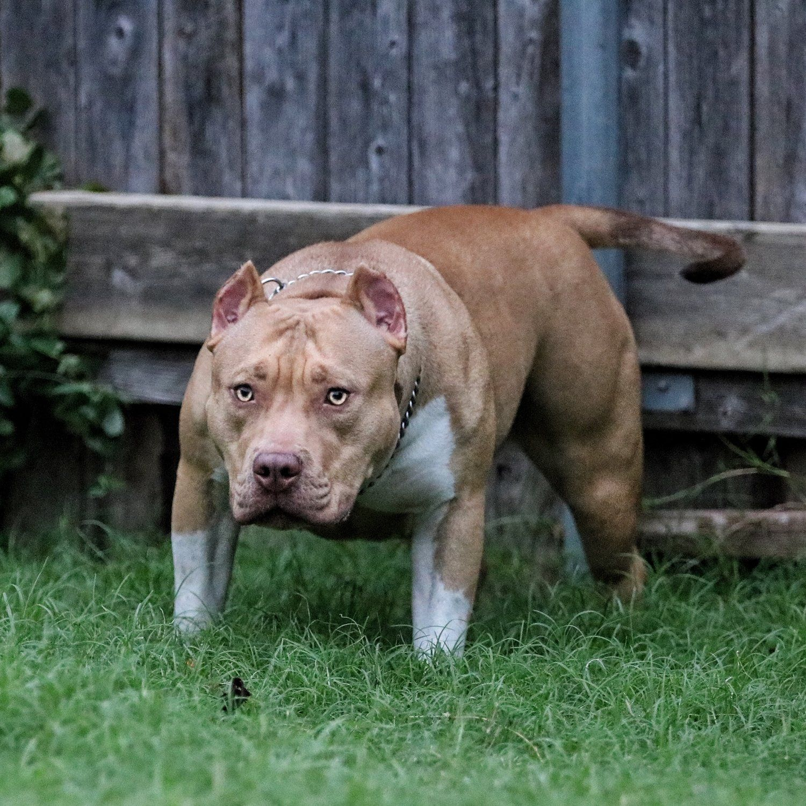

gonzalo bustamante
aqui te puedes contactar con nosotros para buscar al nuevo animal que estara en tu vida de hoy en adelante pueden buscar redes sociales para que puedan preguntar cosas que te llamen la intencion
esta parte es para que sepa mas del trabajo que se hacce para traspasar el animal con su proximo dueño donde los dos se vallan felizes del lugar donde lo inicia su vida juntos